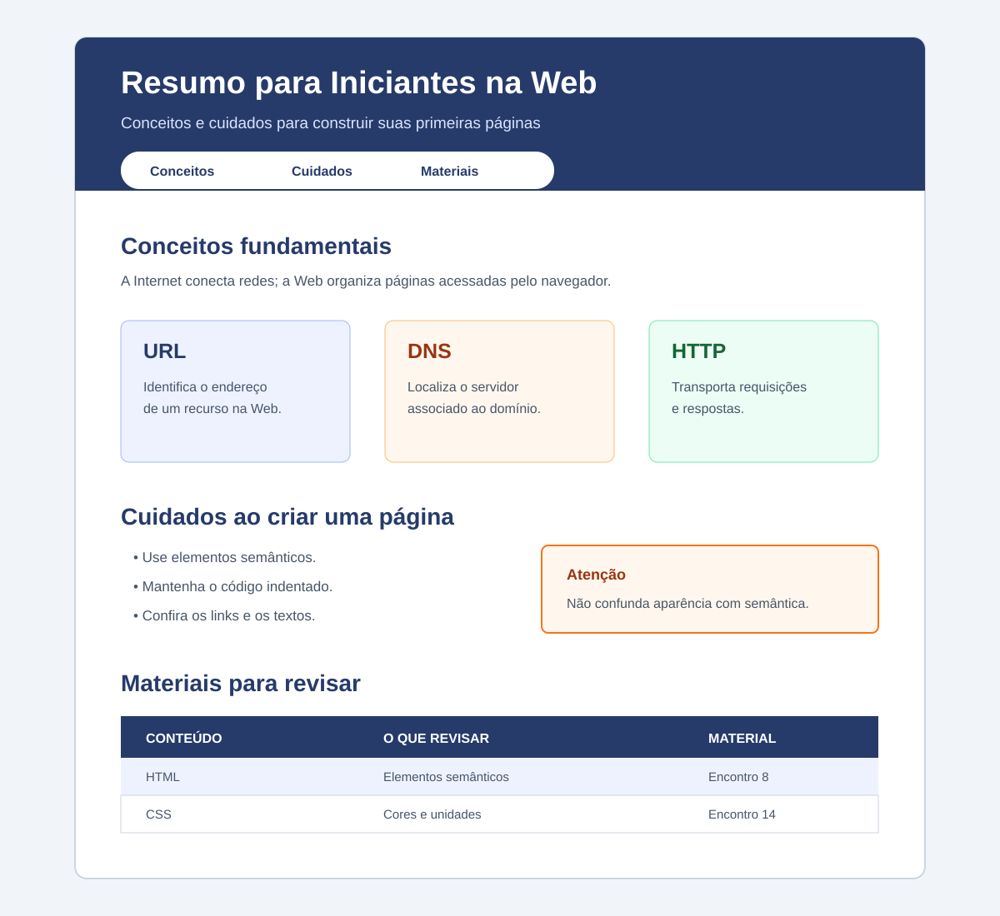

Problema
Crie, do zero, uma página chamada Resumo para Iniciantes na Web. Ela deverá apresentar três conceitos fundamentais da Web, recomendações para escrever uma boa página HTML e materiais para revisão.
A página deverá utilizar HTML5 semântico e um arquivo CSS externo. O menu e os cartões de conceitos deverão ser organizados com Flexbox. Não utilize JavaScript, Grid, media queries ou outros recursos ainda não estudados.
Organização e entrega
- Crie uma pasta chamada
nome-sobrenome. - Dentro dela, crie
index.htmlestyles.css. - Produza os dois arquivos a partir de arquivos vazios.
- Compacte a pasta em
.zipe envie-a pelo Google Sala de Aula.
Requisitos do HTML
1. Estrutura do documento
- usar
<!doctype html>ehtml lang="pt-BR"; - incluir
meta charset,meta viewportetitlenohead; - usar Resumo para Iniciantes na Web como título da aba;
- conectar
styles.csscomlink; - organizar o
bodycomheader,nav,mainefooter; - manter aninhamento e indentação corretos.
2. Cabeçalho e menu
No header:
- criar um
h1comid="topo"e um parágrafo de apresentação; - criar um
navcom links para#conceitos,#cuidadose#materiais; - garantir que todos os links internos tenham destinos existentes.
3. Conceitos fundamentais
Crie section id="conceitos" contendo:
- um
h2e um parágrafo que diferencie Internet e Web; - uma
div class="cartoes"com trêsarticle class="cartao"; - em cada
article, umh3e um parágrafo; - um cartão sobre URL, um sobre DNS e um sobre HTTP;
- na explicação de HTTP, mencionar cliente, servidor, requisição e resposta.
4. Cuidados ao criar uma página
Crie section id="cuidados" contendo:
- um
h2; - uma lista não ordenada com pelo menos quatro cuidados relacionados a semântica, indentação, links ou acessibilidade;
- um
asidecom um alerta curto sobre um erro comum de iniciantes.
5. Materiais para revisar
Crie section id="materiais" com uma tabela contendo:
caption,theadetbody;- as colunas Conteúdo, O que revisar e Material;
thcomscope="col", pelo menos três linhas e pelo menos um link para um material da disciplina.
6. Rodapé
- informar no
footero nome do estudante e a turma; - criar o link Voltar ao topo, apontando para
#topo.
Requisitos do CSS
O arquivo styles.css deverá:
- criar em
:rootpelo menos três variáveis para cores; - estilizar os elementos semânticos e usar seletores de elemento, classe e identificador;
- definir
font-family,font-size,line-heighte cores com bom contraste; - limitar e centralizar o conteúdo com
max-widthemargin; - usar
margin,paddinge unidades relativas, comorem; - organizar o menu com
display: flexegap; - organizar
.cartoescomdisplay: flex,gapeflex-wrap; - dar aos cartões borda, fundo e espaçamento interno;
- destacar o
asidee estilizar links e tabela.
Exemplo visual do resultado esperado
O exemplo indica uma organização possível para o cabeçalho, os cartões, a lista e a tabela. Não é necessário copiá-lo exatamente.
